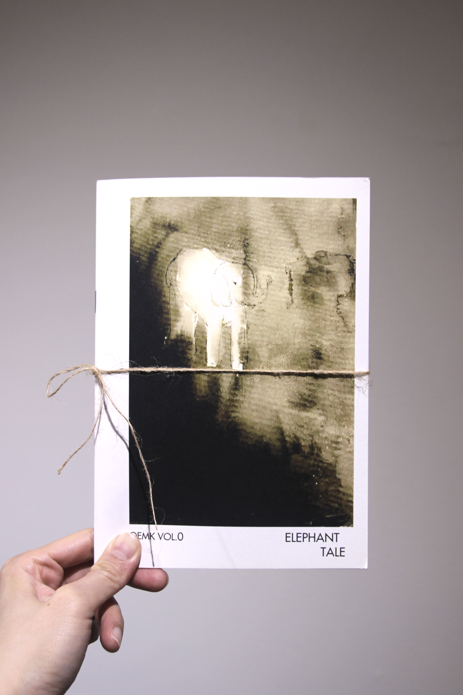
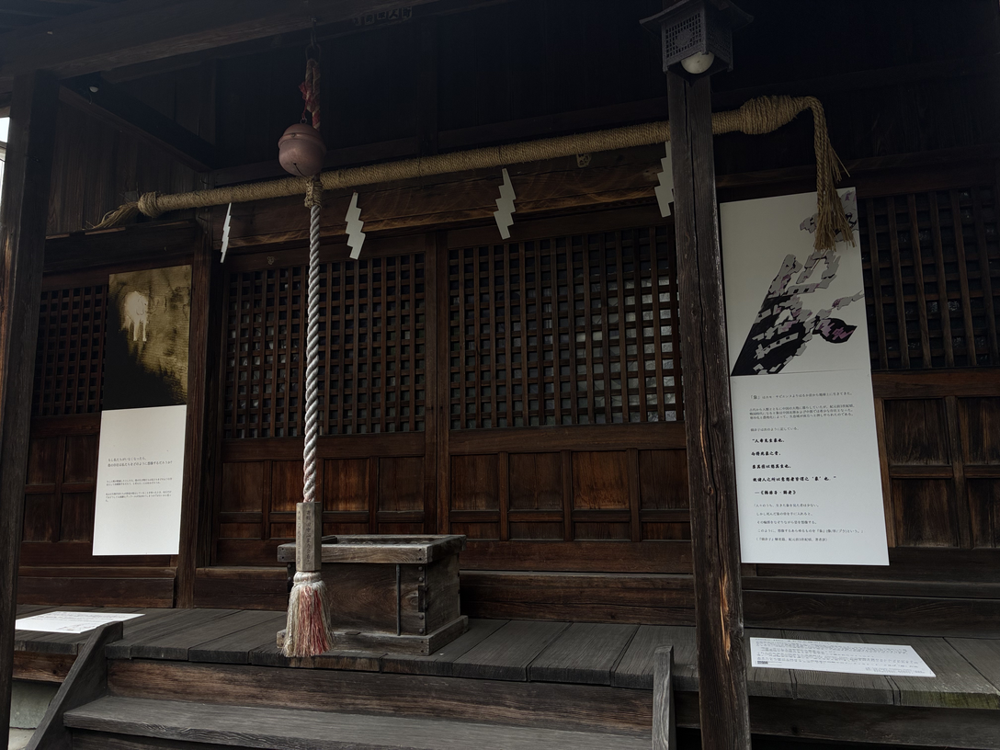
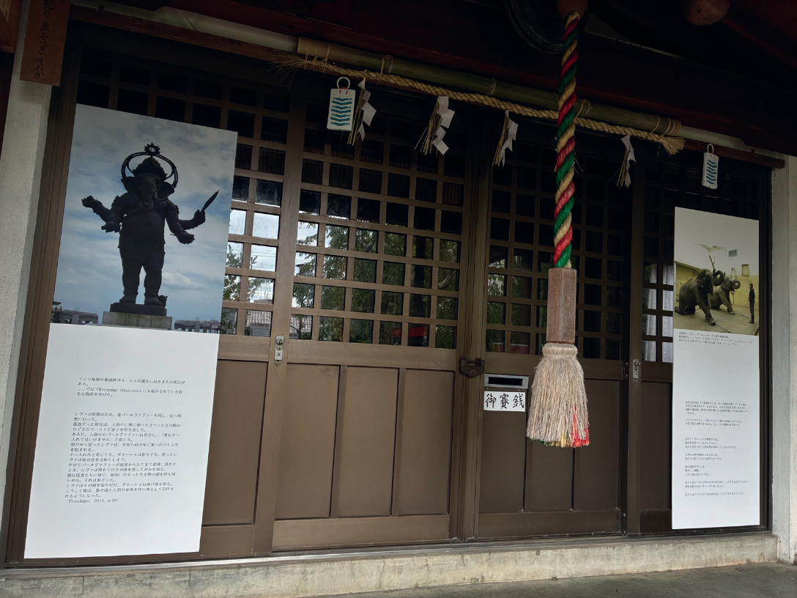
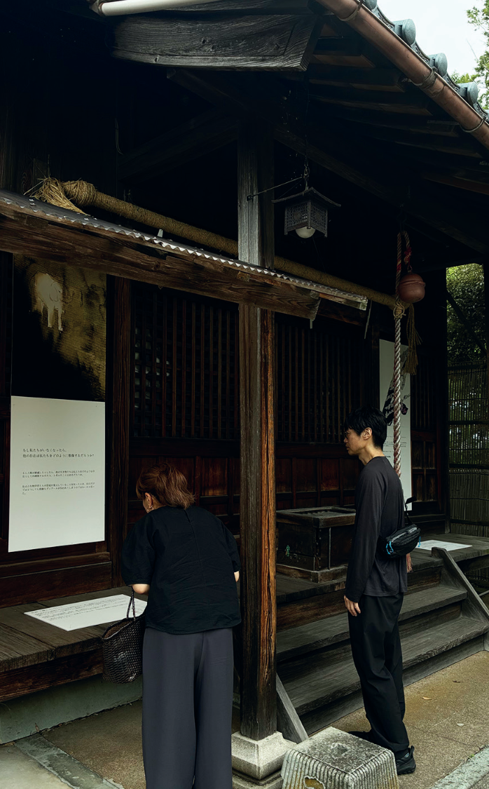
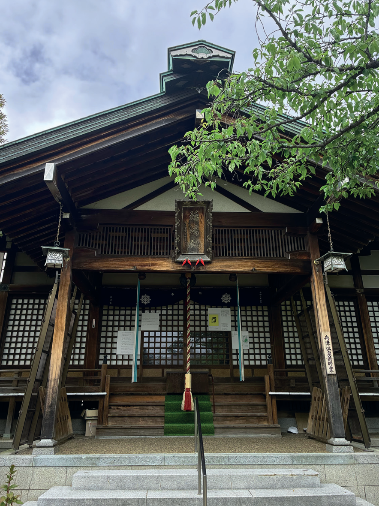

OEMK / Prologue
亻象
Elephant Tale
In Chinese, 象 carries echoes of elephant, image, and phenomenon.
像 adds the person radical 亻, becoming likeness, figure, or idol.
By pulling these elements apart, 亻象 fractures the image back open.

In Han Feizi, those who had never seen a living elephant imagined its form through the bones of the dead. In the parable of the blind men and the elephant, each person encounters the animal through a fragment of perception.
Moving between elephant, image, idol, and the illegible body, Elephant Tale explores how images are constructed through fragments, proxies, and replicas. The elephant becomes a figure, a symbol, and a question: how do we imagine what we cannot fully perceive or know?
OEMK VOL. 0 / SELECTED SPREADS

One branch of this inquiry became OEMK — an ongoing publication series around the displaced, the residual, and the unarchived.
The prologue issue, OEMK Vol. 0: Elephant Tale, does not try to produce one truth. Instead, it works through what I call a poetic polyphony: a collage of texts and images, a polyphonic chorus that sketches, distorts, and depicts the elephant as figure, symbol, and question. Different voices coexist without collapsing into a single narrative.
Through fragmented texts and visual constellations, the publication reflects on stories told and untold. It asks who has the authority to narrate and how power structures continue to shape knowledge in postcolonial and anthropocentric contexts.
Elephant Tale / Japan, 2026
Elephant Tale
Three Yakushi-do Halls, Awara-Yunomachi, Japan
The three Yakushi-do halls in Awara Onsen, Fukui, long functioning as important community gathering spaces, hosted an exhibition presenting selected pages from OEMK Vol. 0: Elephant Tale.
Through themes of spirituality, collective memory, myth, and power hierarchies, the work engages with the layered histories and everyday presence of these communal religious spaces. Installed across windows and entrance areas, the exhibition extends the publication into the architecture and daily life of the neighbourhood.




Thank you to Kato Sumiko Foundation Project & Hamuro-kai, Japan.